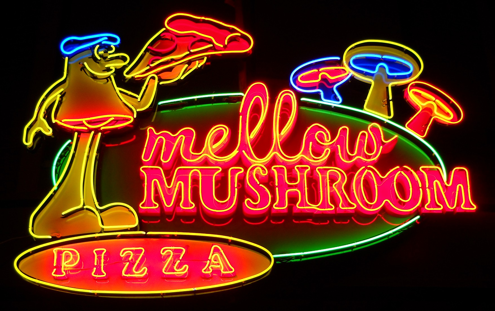

I've been playing around with the new Mapbox Studio for a couple of weeks - putting the tool through it's paces in an attempt to push the cartographic envelope.
Below is a very long, in-depth walkthrough of the latest mapping tool developed by the OpenStreetMap powerhouse.
The Goal:
Develop a map inspired by neon signs.
But first...
What is Mapbox Studio?
Mapbox Studio is a web-based mapping application that allows you to quickly style a map of the entire world.
Let's unpack that
That statement is actually pretty f$#%ing amazing, and I don't want you to take it for granted. Simply put, this tool is unique in that it was literally impossible to achieve not that long ago.
When desktop GIS first became a thing, it would have been nearly impossible to have enough computing power and storage space to make such a detailed map of the world. Let alone the fact that a worldwide, digital, street-level dataset probably only existed in the halls of the world intelligence agencies.
Think about how crazy it was in 1996 when Mapquest launched. It was a revelation that you could use the internet to find directions between (most) any two places on the planet. But this was still the sole domain of the super-powerful internet companies.
When Steve Coast founded OpenStreetMap in 2005, we're starting to get the groundwork laid for everyone to be able to map the world, but not many people had the computing power, bandwith, and expertise to consume such a massive data source.
Now, in 2015, Mapbox has finally removed the last remaining technical hurdle. The entire workflow for making your own, customized map of the entire world is:
- Create an account
- Log in
- Launch Mapbox Studio
- Map.
With this perspective in mind, let's make a map.
Making a map
(Note: These screenshots were taken during the beta and may vary slightly from the current version.)
It's pretty simple to get started. Just create a new style, and then pick
from one of Mapbox's existing styles or start from
a blank source.
The blank source
It can be rather daunting to start from the ground up, but if you're wanting to really make something unique I think it's a must.
This doesn't look to dissimilar to a traditional GIS program. You launch it, and it sits there - empty - waiting for your data.
Selecting data
Thankfully (and miraculously, as mentioned previously), Mapbox has provided the data for the entire world for you to style (courtesy of OpenStreetMap).
Start by opening the "New Layer" pane. This changes the map view from "Cartography" to "X-Ray" mode, allowing you to see all the data behind the scenes.

You get a preview of the depth and breadth of information available at your fingertips. You just need to click on the data in the map that you want to style and hit "Select."

Once a layer has been selected, the data is highlighted in the map. This will be especially helpful later when filters are required.

Go ahead and press "Create Layer" and the map switches back to Style mode.
Styling data
Now we get our first look at the map styling tools. Also, we can breathe a slight sigh of relief that our map is no longer blank.
Let's see what we have to work with.
Let's break down our toolbox.
- Color picker

- Pattern Picker

- Opacity Slider
- Antialias Toggle (a 1px outline)

- Notice the handy popup? Every descriptive text does that just in case you're wondering what a property does.
- Antialias Color Picker

- Translation Settings

That's a pretty standard set of tools, not a lot of mind-blowing stuff in the polygon styling toolbelt...
Oh, except did I mention...? Everything you do changes live?
Let's take another look at that color picker in action.
This is due to the amazing technology Mapbox uses to render the map in your browser. Basically, it uses your graphics card to render the map constantly at 60 frames per second. This allows for the cartographer to get instant feedback on their design, and for the user to never have to wait for the next zoom level to load. This is a gross oversimplification, so if you want to learn more about the underlying technology head over to the Mapbox blog.
Building the Style
Land
Let's keep building the map. We've got the water, let's add the land.
One important thing to note when creating your map is that your underlying background data (water and land), only the water is actual data. To save space, you style the land by styling the background of the map (i.e. the absence of water).
Countries
Let's add the country boundaries. This will give us a chance to highlight the built-in query tools.
When you select the admin layer, you get the entire unfiltered
dataset. I want to style only the land country boundaries, so I click the
add filter button to see what attributes can be queried out.
For this layer I only want to see level 2 (country), undisputed land boundaries. Let's look at the ways we can style lines.

This is a pretty standard set of line styling options. There are a couple
of options worth noting though. The gap width option is
nice for allowing you to have "casing" for your roads or
paths for example.

This is great for road casing. It gives a slight visual separation to the roads. (via Mapbox Streets style)
The blur setting is an interesting one that we'll check out next
So let's give our country lines the following settings:
color: #EF0
dasharray: [1,2]

That's nice, but it stays at width: 1px no matter how much
you zoom in. Let's make the line width vary with zoom level.
Gone are the days of CartoCSS where you'd have to set explicit
style breaks at integer zoom levels. ("back in my day...").
Now a function defines the way your style changes as you zoom.
This allows you to very quickly setup complex rules for your styles.

So our yellow dashed country boundaries are nice looking, but let's kick'em up a notch!.
Layering layers
My biggest complaint with migrating away from CartoCSS to
Mapbox GL
is the fact that the same data layer can't hold multiple styles.
Functionally what this means is that if you want any sort of complicated
symbology you need to duplicate that layer in your table of contents.
For this map, that means we're ultimately going to end up with over 100 layers. (You've been warned)
So, let's get started.
Start by duplicating the existing admin layer with the
button at the top of the table of contents.

We're going to create a neon light-like glowing effect, so below the
bright yellow #EF0 color we'll put a darker color. We'll
also make it wider and utilize the blur function.
color: |
#AB0 |
width: |
[0,0.5 |
blur: |
[0,0 |
That will create a pretty nice effect, but we're not done yet. Let's do it one more time with an even darker yellow and an even wider stroke and larger blur.
color: |
#660 |
width: |
[0,5 |
blur: |
[0,10 |
Notice that the ramps aren't a slow steady march from z0
to z22. In this case I ramp them up quickly so that by time
the user gets to z10 the admin lines are at their widest.
This also means that as they get closer and closer the "visual importance"
of the country boundaries fade. This is sensible for the country borders
because as the map gets more and more detailed, the border becomes
less important visually and the roads start demanding the higher
visual importance.
The result will be something like this:
Now you're probably starting to piece together why there will be over 100 levels. If we want a glowing effect on all the lines then we're going to have to duplicate each line several times.
So here's our world map with yellow dashed neon country borders.

And here it is a little closer:
Next I'm going to add admin level 4 (states) in a similar style, but purple and a little thinner than the country borders.
WaterThose Swiss lakes look a little dull, let's make them glow!
Now we'll do something just a little tricky. We're going to take the
water layer - which is a polygon dataset - and add
it to our table of contents as a line layer.
In the New Layer view, select the water
dataset, and then at the bottom change the type from
fill to line.

This new layer will automatically appear at the top of your table of contents, but we don't necessarily want it there. To rearrange, simply click and drag on the layer!

Nice.
Basic LabelsLet's give our map readers some context as their zooming in on our map by adding country labels.
Start by creating a new layer using the country_label
layer.

Be sure to add a filter for type = country and change the
type of layer at the bottom to Symbol
Mapbox has generously teamed up with FontFont to provide a very nice assortment of professional fonts for your map design pleasure. Let's pick one that's angular and technical looking so that it matches our neon theme. I opted to go with Magda Clean Mono Offc Pro Black.
Let's style those labels.
Another thing we want to do is have state labels show up at some point
as you zoom in. For this we'll use the zoom-extent setting
in the new layer window.
Alright, this post is getting really long, so we'll skip ahead to the really neat part - neon roads.
Start by creating a new layer using the road dataset with
a filter of class = 'motorway'.
To create a glowing neon effect, we're actually going to stack three different layers of the same data using different styles. Remember how we stacked up several layers to making the glowing country borders earlier? We'll do the same thing here for the highways.
The result with look something like this.
Let's get started. First let's make the thin top layer. It is a thin, yellowish, slightly blurry line.

Next, duplicate the layer, make it a little orange-er, a little wider, and a little blurrier.
Next, duplicate the layer again, make it a little orange-er, a little wider, and a little blurrier.
Let's see how that looks as we zoom in.

I've added lower level streets just for reference. Also, there are gaps
between different segments because the road dataset doesn't
include bridges. To get those to show up you need to duplicate the layers
and change the data source to the bridge dataset.
Explore the Final Product
Here is the completed map.
Wrap-up
It takes a lot of work to develop a cohesive, comprehensive well-designed web map of the world. Based on the responses to Saman Bemel Benrud's question from the other day, some cartographic heavyweights like Jonah Adkins and Bill Morris put the number at 1-4 work weeks.
Subsequent discussion in The Spatial Community Slack seemed to concur. Good cartography takes time!
Reposted with permission.It's a farily new thing for everyday cartographers to have the tools to be able to easily design a global, zoomable map. This requires a new set of skills:
- Designing across zoom levels
- Designing data you don't have complete control over
- Designing across cultures
- Designing for both dense and sparse areas
I started this post intending to write a comprehensive guide to designing an awesome map with the new Mapbox Studio, but now I'm really concerned that I've only given you sufficient instruction for drawing some circles, and I'm leaving it up to you to figure out how to draw the rest of the f$#%ing owl.

Maybe someday I'll record a screencast or make a video about designing a global basemap. Would you watch something like that?
If you found this useful at all, I'd really appreicate hearing from you.
You can reach me at stephen@mapsmith.net
I'm on Twitter @TheMapSmith